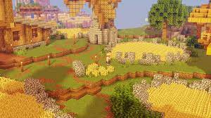

| Crop | Base Xp | Location |
|---|---|---|
| Wheat | +4 | Hub and The Barn |
| Pumpkin | +4,5 | The Barn |
| Melon | +4 | The Barn |
| Potato | +4 | The Barn |
| Carrot | +4 | The Barn |
| Sugar Cane | +2 | Mushroom Desert |
| Mushroom | +6 | Mushroom Desert |
| Mushroom Blocks | +2 | Mushroom Desert |
| Cactus | +2 | Mushroom Desert |
| Cocoa Beans | +4 | Mushroom Desert |
| Bracket | % Required | Tickets | Other Rewards |
|---|---|---|---|
| None | Just participation | 1 | None |
| Bronze | Top 60% | 10 | Turbo-Crop (Crop that you participated in) |
| Silver | Top 25% | 15 | Turbo-Crop (Crop that you participated in) |
| Gold | Top 5% | 25 | Turbo-Crop (Crop that you participated in) |
| The Farm | The Barn | Mushroom Desert |
|---|---|---|
|  | |
|
| Jacob | Anita |
|---|---|